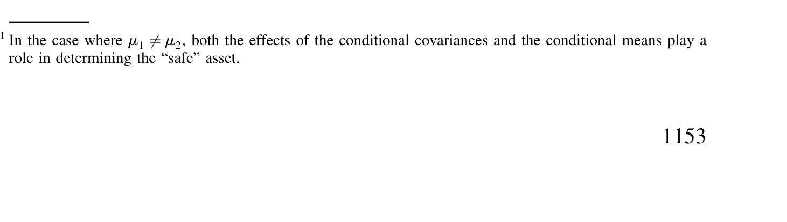
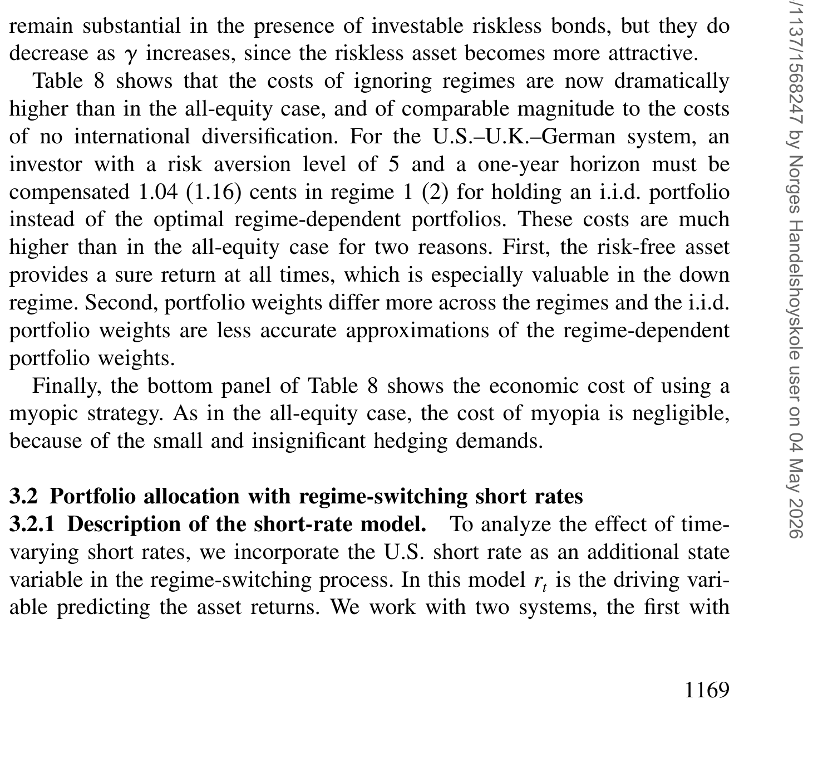
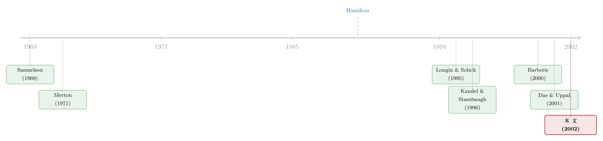

分散投资的『退潮时刻』：当相关性在熊市里抱成一团
本文读的是 Ang & Bekaert (2002, Review of Financial Studies)：把国际股市「跌起来就一起跌」的不对称相关性，写进一个机制转换 (regime-switching) 的收益生成过程，再老老实实解出一位美国投资者的动态组合问题。结论有些出人意料——即便存在「熊市抱团」，国际分散投资依然值得；货币对冲还能再添一份收益；而「假装没有机制」的代价，对全股票组合几乎可以忽略，一旦允许持有无风险资产，代价才骤然变大。
1 一个让分散投资蒙羞的「事实」
先说一个几乎所有做全球配置的人都听过的坏消息。
教科书告诉你，把鸡蛋分到不同国家的篮子里能降低风险，这是 Solnik (1974a)、Sercu (1980) 这一脉国际资产定价模型的核心信条：理性的投资者应当持有世界市场组合，再叠加一串对冲实际汇率风险的对冲组合。可现实里，全世界的投资者却都顽固地偏爱本国资产——这就是著名的「本土偏好之谜」(home bias puzzle)。
为这个谜辩护的人，最爱搬出一条经验事实：国际股市收益之间的相关性，在熊市里要比在牛市里高得多。Erb, Harvey, and Viskanta (1994)、King, Sentana, and Wadhwani (1994)、Longin and Solnik (1995, 2001) 等一批研究都反复记录了这个现象。它的杀伤力在于一句反问：如果分散投资的好处，恰恰在你最需要它的时候（本国市场暴跌时）消失了，那国际投资还值不值得做？
这正是 Ang 和 Bekaert 想正面回答的问题。但他们没有停留在「讲故事」的层面——要把这条直觉证伪或证实，你需要一个能容纳时变相关性与时变波动率的动态资产配置模型。而标准模型及其实证应用 [French and Poterba (1991)、Tesar and Werner (1995)] 里，相关性和波动率都是常数。一个常数的世界，根本装不下「退潮时刻」这件事。
（关于「跌起来才显形」的不对称相关本身，可参见《你以为分散了风险，可一到崩盘那天，它们全抱成了团》。）
2 用一台「会换挡」的机器复刻熊市抱团
首先要解决的，是怎样让模型自己「长出」不对称相关。
作者的办法是机制转换 (regime-switching, RS)。设想收益由两个截然不同的状态轮流主导：一个「正常」(normal) 机制，低相关、低波动；一个「熊市」(bear) 机制，高相关、高波动、且条件均值更低。状态 \(s_t\) 像 Hamilton (1989) 那样按一条马尔可夫链 (Markov chain) 切换，从机制 \(i\) 跳到机制 \(j\) 的转移概率记为 \(p_{ij}\)。
最干净的设定就是两状态模型（论文的式 15）：
$$ y_{t+1} = \mu(s_{t+1}) + \Sigma(s_{t+1})^{1/2}\,\varepsilon_{t+1} $$
这里 \(y_{t+1}\) 是美、英（或美、英、德）的对数股票收益向量，转移矩阵为
$$ \begin{pmatrix} P & 1-P \\ 1-Q & Q \end{pmatrix},\qquad P = p(s_{t+1}=1\mid s_t=1),\quad Q = p(s_{t+1}=2\mid s_t=2) $$
均值 \(\mu\) 和协方差 \(\Sigma\) 都随机制变化——熊市机制里 \(\Sigma\) 的对角元（波动率）和非对角元（相关性）一起抬高。关键在于：给定 \(s_t\)，下一期收益的分布是若干个正态分布的混合 (mixture of normals)，而混合正态天然带着肥尾、持续的随机波动率等股票收益该有的脾气。
接着，一个自然的检验是：这台「会换挡」的机器，到底复刻得出真实数据里的不对称相关吗？作者把 Longin and Solnik (2001) 记录的超越相关性 (exceedance correlation，即只在两国收益都超过某阈值时计算的相关)当作经验基准。结论是：RS 模型能重现这条不对称的超越相关曲线，而标准的多元正态、乃至非对称 GARCH 模型都做不到。这一步至关重要——它说明「熊市抱团」不是某个外生跳跃硬塞进来的，而是持续性机制的自然产物。
这正是 Ang-Bekaert 与最接近的同行 Das and Uppal (2001) 的分野。后者用各国「完全相关的跳跃」来制造危机式的联动，但跳跃是瞬时的、独立于收益的；而这里的两个机制都是持续的，瞬时跳跃捕捉不了这种持续性。此外本文还把时变短期利率、利率对收益的预测、以及货币对冲一并纳入。
3 模型：把「天书」一样的动态组合，解成一组会换挡的方程
这是一篇有完整理论与数值解的论文，值得把核心推导一步步摊开。
设定。 一位美国投资者面对 \(T\) 个月的投资期限，每月在 \(N\) 种资产间再平衡，最大化期末财富的期望效用。她用常相对风险厌恶 (constant relative risk aversion, CRRA) 效用：
$$ U(W_T) = \frac{W_T^{1-\gamma}}{1-\gamma} $$
\(\gamma\) 是风险厌恶系数。组合的总收益为
$$ R_{t+1}(\omega_t) = \sum_{j=1}^{N}\exp(y^{j}_{t+1})\,\omega^{j}_t \equiv \exp(y_{t+1})'\omega_t $$
权重之和为 1（\(\omega_t'\mathbf{1}=1\)），不限制卖空、无交易成本。
动态规划。 用动态规划逐期求解。在时点 \(t\)、剩余期限 \(T-t\) 时，最优权重由「缩放后的间接效用」给出（论文式 4）：
其中（式 5）
$$ Q_{t+1,T} = E_{t+1}\!\left[\big(R_{t+1}(\omega^*_{t+1})\cdots R_{T-1}(\omega^*_{T-1})\big)^{1-\gamma}\right],\qquad Q_{T,T}=1 $$
这一项 \(Q\) 是全篇的枢纽。当收益 i.i.d. 时，Samuelson (1969) 证明 CRRA 下权重恒定、\(T\) 期问题退化为一期问题；一旦收益不再 i.i.d.，权重就按 Merton (1971) 拆成「近视成分」与「对冲成分」——后者源于投资者想对冲投资机会集的不利变动。在 RS 世界里，\(Q_{t+1,T}\) 会随机制取 \(K\) 个值，于是最优权重变成机制的函数 \(\omega^*_t(s_t)\)，而且投资者还想对冲未来的机制切换。
一阶条件与「线性组合」的妙处。 把 \(\xi_{t+1}\) 记为资产 \(1\) 到 \(N-1\) 相对资产 \(N\) 的超额收益向量，一阶条件 (FOC) 为（式 6）：
$$ E_t\!\left[\,Q_{t+1,T}\,R^{-\gamma}_{t+1}(\omega_t)\,\xi_{t+1}\,\right] = 0 $$
混合正态下它没有闭式解。作者沿用 Tauchen and Hussey (1991) 的求积 (quadrature) 法做数值积分。最漂亮的一步在式 7：在机制 \(s_{T-1}=i\) 下，一阶条件可写成
$$ \sum_{j=1}^{K} p_{ij,T-1}\sum_{k=1}^{M_j}\big(\exp(y_{jk,T})'\omega_{i,T-1}\big)^{-\gamma}\,\xi_{jk,T}\,w_{jk,T} = 0 $$
读懂它你就抓住了全文的技术内核：括号里就是「给定下一期身处机制 \(j\)」的那条标准 CRRA 一阶条件，而引入机制后，整个问题不过是把各机制的一阶条件按转移概率做了一次线性组合。于是对混合正态收益，这道看似吓人的动态题变得极其可解——每个期限只需追踪 \(K\) 个状态变量 \(Q_{i,t+1,T}\)。Balduzzi and Lynch (1999) 与 Campbell and Viceira (1999) 早就指出，求积只需五个点就足够精确。
（把动态组合解成「会做回归／会被模拟」的方程，是这一脉的共同追求，可对照《长期投资者的『天书』》与《把投资组合的「天书」解到只剩一个常微分方程》。）
统计推断：走经典路线。 要检验「机制效应」「跨期对冲需求」是否真的大，得先给组合权重配上标准误。Kandel and Stambaugh (1996) 与 Barberis (2000) 用贝叶斯，Brandt (1999) 用欧拉方程加工具变量；本文则从经典计量的视角出发，用德尔塔法 (delta method)。一阶条件 \(\Psi(\hat\varphi,\omega^*_t)=0\) 隐式定义了权重，借隐函数定理与德尔塔法可得渐近分布（式 12）：
$$ \omega^*_t \;\overset{a}{\sim}\; N\big(\eta(\varphi_0),\,D\,\Omega\,D'\big) $$
实际操作里 \(D\) 用数值梯度算：把参数向量 \(\hat\varphi\) 的第 \(i\) 个元素扰动 \(\delta = 0.0001\)，重解一阶条件得新权重 \(\hat\omega^{*\delta}_t\)，则 \(D\) 的第 \(i\) 列为 \((\hat\omega^{*\delta}_t - \hat\omega^*_t)/\delta\)。凭这把尺子，作者能正式检验三件事：(i) 国际分散是否显著（某机制下美国权重是否显著异于 1——这一问很有针对性，因为 Britten-Jones (1999) 提示国际分散的证据可能在统计上并不显著）；(ii) 不同机制间、以及与 i.i.d. 解之间，权重是否显著不同（机制效应）；(iii) 首期权重是否等于 \(T\) 期权重 \(\omega_0(s_t)=\omega_{T-1}(s_t)\)（跨期对冲需求）。
4 经济意义：把「假装」的代价折成现金
但真正关键的一步，不是权重显不显著，而是这些差异值多少钱。
作者用确定性等价 (certainty equivalent) 来度量：要让投资者甘愿用一组次优权重 \(\{\omega^+\}\) 代替最优权重 \(\{\omega^*\}\)，需要补偿她多少财富。设补偿后的初始财富为 \(\bar w\)，它满足（式 13）
$$ E_0\!\left[U(W^*_T\mid W_0=1)\right] = E_0\!\left[U(W^+_T\mid W_0=\bar w)\right] $$
由 CRRA 在初始财富上的齐次性，可解得（式 14）
$$ \bar w = \left(\frac{Q^*_{0,T}}{Q^+_{0,T}}\right)^{\frac{1}{1-\gamma}} $$
再换算成「每一美元财富需补偿多少美分」：\(w = 100\times(\bar w - 1)\)。直觉上，\(w\) 就是风险厌恶的投资者为了把 1 美元放进次优组合、而非最优组合，必须额外收到的现金；等价地，是从次优策略转向最优策略时确定性等价的百分比提升。
有了这把现金尺子，论文回答了开篇那个问题。
结论一：国际分散，依然值钱。 即便存在熊市抱团，不做国际分散（把钱全压在美国股票上）相对于最优配置，仍要付出可观的确定性等价损失。换句话说，「危机时相关性飙升」并不足以推翻分散投资的价值——因为正常机制持续的时间足够长，分散的好处大部分时候都在兑现。如表 4 所示，这一成本在美、英、德三国模型里被逐一量化。

Table 4: (the U.S., U.K., and German model). Economic costs for no inter-
结论二：「假装没有机制」的代价，要分情况。 这是全文最反直觉、也最重要的一笔账。对全股票组合，忽略机制（误以为收益 i.i.d.）的代价很小——长期投资者其实犯不着为偶尔一次的高相关高波动episode大动干戈，因为这些状态多少可预测，他们大可暂时把仓位从国际股票挪开。可一旦允许持有条件无风险资产（无论是常数无风险利率，还是会换挡、并预测收益的短期利率），代价就骤然放大：此时投资者的「避风港」是美国股票或现金，机制信息直接改写了风险资产与无风险资产之间的配置，忽略它的损失变得相当可观。如表 8 所示，引入无风险资产后，忽略机制的成本被显著抬高。

Table 8: shows that the costs of ignoring regimes are now dramatically
结论三：货币对冲是「免费的午餐」之一种。 作为模型的一个副产品，作者给「对冲外汇风险的能力」标了价：允许用远期合约对冲汇率风险，会进一步提升投资者的确定性等价。在大多数设定里，这一能力被刻意关掉，正是为了把它的价值单独量出来。
5 数据
论文聚焦于美国 (US)、英国 (UK)、德国 (German) 三国的月度股票指数收益（均以美元计），并在后续小节里引入美国的短期利率序列作为条件无风险资产与收益预测变量。观测单位是「国家×月份」的收益向量，估计采用 Hamilton (1989) 与 Gray (1996) 的贝叶斯算法来拟合机制转换过程。（样本起讫与样本量的具体口径见原文附录 A，超出本文所引的正文片段，这里不强行复述以免失真。）
为了让分析可解，作者明确地把一批可能重要、但会模糊焦点的因素留在了门外：交易成本、通胀风险、跨国信息差异、人力资本与劳动收入。与近年动态组合选择文献一致，这是一个收益过程外生的局部均衡 (partial equilibrium) 框架，因此也不考虑国际均衡层面的回馈。
6 文献脉络
把这篇论文放回它生长的土壤里，脉络其实相当清晰。
源头有两条。一条是动态组合选择：Samuelson (1969) 与 Merton (1971) 奠定了「i.i.d. 时权重恒定、非 i.i.d. 时出现对冲需求」的基本语法；近二十年后，Brennan, Schwartz, and Lagnado (1997)、Balduzzi and Lynch (1999)、Campbell and Viceira (1999, 2001)、Liu (1999)、Barberis (2000) 掀起一波复兴，但它们几乎都在单一国内市场里，且用状态变量的线性函数来刻画时变的预期收益。
另一条是国际股市的不对称相关：从 Erb, Harvey, and Viskanta (1994)、King, Sentana, and Wadhwani (1994) 到 Longin and Solnik (1995, 2001) 与 De Santis and Gerard (1997)，经验事实越积越厚；Das and Uppal (2001) 则用「相关跳跃」第一次把它正式写进组合选择。

而把这两条线拧到一起的工具，来自机制转换计量——Hamilton (1989) 的开创性工作与 Gray (1996) 的条件分布建模。Ang and Bekaert (2002) 的位置就在这个三岔口：用 RS 复刻不对称相关（而非外生跳跃），在国际多资产 + 时变短率 + 货币对冲的设定下解动态组合，并用德尔塔法（区别于 Kandel and Stambaugh (1996)、Barberis (2000) 的贝叶斯与 Brandt (1999) 的欧拉方程）给出经典的统计推断。这也是两位作者同期一系列「机制」工作的一环——他们在 Ang and Bekaert (2002, JBES) 里研究利率的机制切换，在 Ang and Bekaert (2001) 里追问股票收益可预测性是否真的存在（可参见《股利收益率真能预测收益吗？》）。
评论与延伸（Q&A + 研究方向）
(a) 几个可能的疑问
Q：既然熊市里相关性飙升，为什么分散投资还值得做？
因为「熊市机制」虽然可怕，却不是常态。两个机制都是持续的，正常机制（低相关、低波动）占据了大部分时间，分散的好处在这些时段持续兑现。更何况长期投资者还能在可预测的坏状态来临前调仓避险。一句话：危机时的相关性飙升降低了分散的「即时」价值，但没有抹平它的「平均」价值。
Q：机制转换 (RS) 和带跳跃 (jump) 的模型到底差在哪？
差在「持续性」。Das and Uppal (2001) 的相关跳跃是瞬时的、独立于收益的，过去就过去了；而 RS 的熊市机制会赖着不走，可能持续数月。正是这种持续性，才让超越相关曲线呈现出数据里那种不对称形状，也才让「暂时避险」这种策略变得有意义。
Q：为什么忽略机制的代价，对全股票组合很小、对含无风险资产的组合却很大？
全股票组合里，机制主要改变各国股票之间的相对权重，腾挪空间有限，误判机制的损失被「反正都得拿股票」摊薄了；一旦能持有无风险资产，机制信息就直接决定「冒不冒险」这个一级问题——熊市该躲进现金还是留在股市，差之毫厘谬以千里。维度一升，代价就出来了。
Q：把机制假设成「可观测」，会不会高估了机制效应？
作者诚实地把这当成「最坏情形」来处理。如果投资者能完美观测机制都只有微弱效应，那引入学习后效应只会更小；但如果可观测时效应很强，引入不确定性后能不能维持就无法断言。所以「全股票组合代价小」这个结论是稳健的（最坏情形下都小），而「含无风险资产代价大」则需谨慎解读。
Q：用德尔塔法而不是贝叶斯，会不会低估了参数不确定性？
这是一个真实的取舍。贝叶斯（Kandel-Stambaugh、Barberis）能把参数不确定性融进预测分布，往往让长期组合更保守；德尔塔法只给一阶渐近标准误，在 RS 这种参数多、似然面复杂的模型里，小样本表现可能不够稳。好处是它能直接对「机制效应」「对冲需求」做经典假设检验，与既有实证文献可比。
Q：这个框架对「本土偏好之谜」最终是什么态度？
它基本上削弱了用不对称相关为本土偏好辩护的力度。既然在一个能复刻熊市抱团的模型里，国际分散依然显著值钱，那么把美国投资者的强烈本土偏好归因于「危机时分散失效」，就站不住脚——谜，依旧是谜。
(b) 几个可能的研究问题与提案
1. 把同一台「会换挡」的机器搬到公司债市场。 【经济故事】公司债收益在危机时同样「抱团」，而且信用利差的机制切换比股票更剧烈（违约相关性在衰退里集体抬升）。一个 RS 框架能回答：在投资级与高收益债之间做国际/跨币种分散，熊市机制是否吞掉了分散收益？ 【可行性】中。需要 TRACE + 国际债券指数的月度收益，识别上可直接套用 Hamilton-Gray 估计；难点在于公司债流动性使「收益」本身带噪，需先做流动性调整。
2. 给「外资持有人」加一层机制。 【经济故事】外资在新兴市场常被指责「熊市夺路而逃」，放大相关性。若把外资净流入作为可观测状态变量嵌入 RS-DGP，能检验「外资撤离」究竟是机制切换的因还是果，并给跨境分散的真实价值重新标价。 【可行性】中。EPFR 基金流 + MSCI 国别收益可得；识别难点是流入与机制的内生性，可能需要外生流动性冲击（如指数纳入事件）作工具。
3. 引入学习 (learning)，量化「机制不可观测」时的真实代价。 【经济故事】本文承认可观测机制是「最坏情形」。把投资者对机制的贝叶斯更新显式建模，能算出现实中（机制需要被学习）忽略机制到底还剩多少代价——这直接关系到实务中是否值得为机制信号付费。 【可行性】低到中。理论上状态空间随样本路径指数膨胀，计算极重；可借粒子滤波或近似动态规划处理，是一个偏方法论的硬骨头。
4. 把交易成本请回桌面，重估「暂时避险」策略。 【经济故事】本文「长期投资者可暂时调离国际股票」的论断，建立在无交易成本之上。一旦加入成本，频繁的机制切换可能让避险得不偿失，代价排序甚至可能反转。 【可行性】高。在现有 RS 框架里加比例交易成本即可，数值上可解；是对原结论稳健性的一次直接、干净的压力测试。
我的判断
这篇论文的贡献是「把直觉钉死成数字」：它没有满足于「熊市相关性会飙升」这条人人会说的经验事实，而是建了一个能复刻该事实的 RS-DGP，再在其上解出可推断、可折现的动态组合，最终给出一个清晰且略反直觉的结论——分散依旧值钱，忽略机制的代价高度依赖于「有没有无风险资产」这一维度。把求积法用到机制转换上、让一阶条件退化为各机制 FOC 的概率加权线性组合，是技术上最优雅的一笔。
要说对识别的担忧，主要有三点。其一，「机制可观测」是强假设，作者已坦诚这是最坏情形，但它让「代价大」一侧的结论解读受限。其二，德尔塔法在参数密集、似然面多峰的 RS 模型里，小样本可靠性存疑，结论的统计显著性最好辅以自助法 (bootstrap) 复核。其三，三国、月度、外生收益过程的局部均衡设定，离真实的全球配置（数十国、交易成本、汇率与利率联动）尚有距离。
后续我最想看到的，是把这套框架接到信用市场与外资流动上——熊市抱团在公司债里只会更凶，而那恰恰是分散投资者最该担心、文献却谈得最少的角落。
参考文献
- Ang, A., and G. Bekaert (2002). International Asset Allocation with Regime Shifts. Review of Financial Studies 15(4), 1137–1187.
- Ang, A., and G. Bekaert (2002). Regime Switches in Interest Rates. Journal of Business and Economic Statistics 20, 163–182.
- Barberis, N. (2000). Investing for the Long Run When Returns are Predictable. Journal of Finance 55, 225–264.
- Balduzzi, P., and A. Lynch (1999). Transaction Costs and Predictability: Some Utility Cost Calculations. Journal of Financial Economics 52, 47–78.
- Brandt, M. W. (1999). Estimating Portfolio and Consumption Choice: A Conditional Euler Equations Approach. Journal of Finance 54, 1609–1646.
- Britten-Jones, M. (1999). The Sampling Error in Estimates of Mean-Variance Efficient Portfolio Weights. Journal of Finance 54, 655–671.
- Campbell, J. Y., and L. M. Viceira (1999). Consumption and Portfolio Decisions When Expected Returns are Time Varying. Quarterly Journal of Economics 114, 433–495.
- Das, S. R., and R. Uppal (2001). Systemic Risk and Portfolio Choice. Working paper, London Business School.
- French, K. R., and J. M. Poterba (1991). Investor Diversification and International Equity Markets. American Economic Review 81, 222–226.
- Gray, S. F. (1996). Modeling the Conditional Distribution of Interest Rates as a Regime-Switching Process. Journal of Financial Economics 42, 27–62.
- Hamilton, J. D. (1989). A New Approach to the Economic Analysis of Nonstationary Time Series and the Business Cycle. Econometrica 57, 357–384.
- Kandel, S., and R. F. Stambaugh (1996). On the Predictability of Stock Returns: An Asset Allocation Perspective. Journal of Finance 51, 385–424.
- Longin, F., and B. Solnik (1995). Is the Correlation in International Equity Returns Constant: 1960–1990? Journal of International Money and Finance 14, 3–26.
- Longin, F., and B. Solnik (2001). Correlation Structure of International Equity Markets During Extremely Volatile Periods. Journal of Finance 56, 649–676.
- Merton, R. C. (1971). Optimal Consumption and Portfolio Rules in a Continuous-Time Model. Journal of Economic Theory 3, 373–413.
- Samuelson, P. A. (1969). Lifetime Portfolio Selection by Dynamic Stochastic Programming. Review of Economics and Statistics 51, 239–246.
- Sercu, P. (1980). A Generalization of the International Asset Pricing Model. Revue de l'Association Française de Finance 1, 91–135.
- Solnik, B. H. (1974a). An Equilibrium Model of the International Capital Market. Journal of Economic Theory 8, 500–524.
- Tauchen, G., and R. Hussey (1991). Quadrature-Based Methods for Obtaining Approximate Solutions to Nonlinear Asset Pricing Models. Econometrica 59, 371–396.